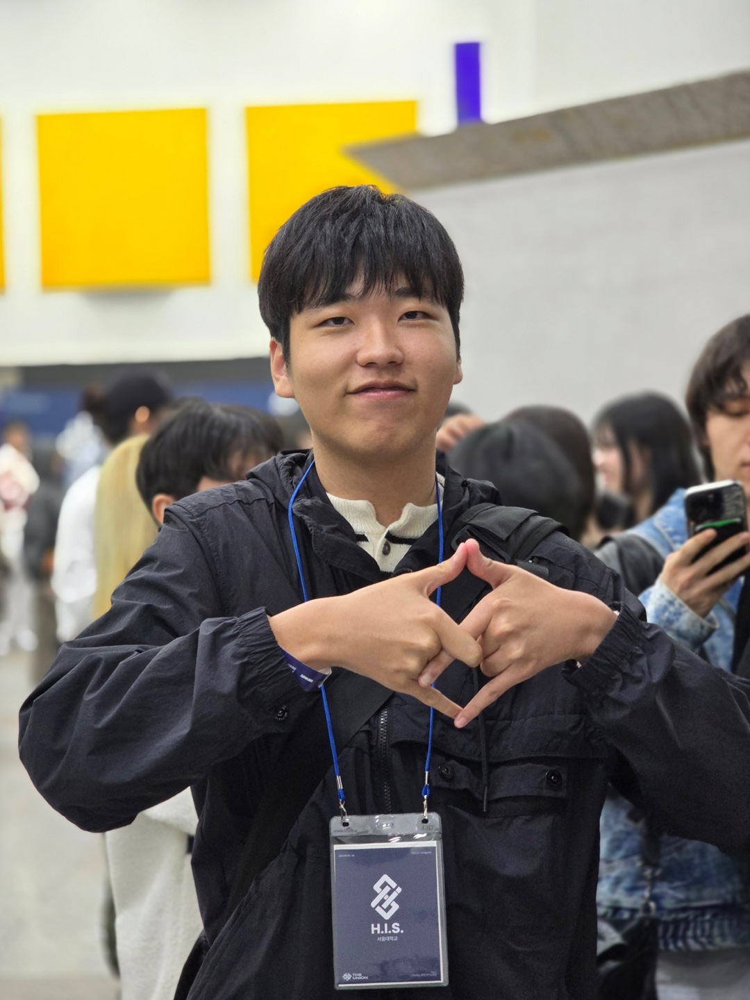

GitHub
Code, experiments, and public repositories.
Visit GitHub@HILEE0941
A personal home for my profile, selected work, and CV. I care about clear interfaces, reliable tools, and software that is easy to keep improving.

Short profile
Hello, I am Lee Seojun. This site is a simple place to introduce myself and keep important links easy to find.
I enjoy building practical digital experiences with a focus on clarity, accessibility, and maintainable code.
What I work on
Responsive pages and interfaces that work well across devices.
Small, dependable software that supports real workflows.
Notes and project summaries that make work easier to understand.
Selected destinations
Code, experiments, and public repositories.
Visit GitHubA downloadable PDF version of my resume.
Open CVUse the contact details listed in my CV.
View DetailsMy resume is available as a PDF and can be opened directly in the browser or downloaded for later.